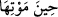

cesedlerini yemeyi toprağa haram kılmıştır.
İnsânî ruh ise böyle değildir. O, emâneti de ma’rifeti de îmânı da yüklenip taşır. Bu
ruh hakkında ilâhî hakîmler (hukemâ-i ilâhiyye) aracılığı ile şerîat, tarîkat, ma’rifet ve
hakîkat ilmi tasarrufta bulunur. Toprak onu yiyip bitiremez. Bir nefs olması îtibâriyle
nebî olan da velî olan da, ‘ben’ diye gösterilen de odur. Bedenden ayrıldıktan sonra bir
bez parçasına konulacak, kabirde sorgulanacak, sevâb verilecek ve cezâya çarptırılacak
olan da bu ruhtur. Bu rûhun bedeni, hisler/duyular ağı vâsıtasıyla ma’rifetleri kazanırken
kullanması dışında bedenle alâkası yoktur. Beden onun âleti, bineği ve ağıdır. Âlet,
binek ve şebekenin bozulup gitmesi ise avcının da yok olup gitmesini gerektirmez.
Tamam, av bittikten sonra ağ bozulur. Onun bozulması esasen bir ganimettir. Çünkü ruh
onu taşımaktan ve onun ağırlığından kurtulur. Bu yüzden Hz. Peygamber (a.s.): “Ölüm
mü’mine verilmiş bir hediyedir.”[120] buyurmuştur. Ancak ağ av bitmeden bozulacak
olursa bu durumda büyük bir hasret ve pişmanlık söz konusu olur. Bu yüzden
amellerinde eksik ve kusurları olanlar âhirette “Ya Rabbi! Beni geri döndür, belki o
boşa geçirdiğim dünyada sâlih ameller işlerim!” (el-Mü’minûn, 23/99-100) derler.
Hayat hissedici kuvvenin mevcut olması demek olduğu gibi ölüm de bu kuvvenin sona
ermesidir. Canlılara ‘hayevân/canlı’ denilmesi de bundandır. Bu kuvvenin kaynağı ise
mahalli dimağ olan hayvanî ruhtur. Nitekim insanî ruhun mahalli de çam kozalağını
andıran sanavberî kalbdir. Ehl-i sünnete göre beşerî ruhlar boşlukta yer işgal etse de, bu
ruhun kalbde yer kaplamakta olması lâzım gelmez. Sonra insan canlı olduğu sürece
hakîkî olarak insandır. Öldüğü zaman ise mecâzî olarak insandır. Çünkü hakîkatte
insanlık, ancak insânî rûhun taalluku iledir. Ölenden ise ayrılmış bulunmaktadır.
Mesnevî’de der ki:
Can, bedendeki bıyıkla sakala gerek duymaz.
Fakat cansız beden değersiz bir leş olur
Âyetin mânâsı şöyledir: Allah bu insanî ruhların bedenlerle bağını koparmak ve
bedenlerdeki zâhirî ve bâtınî tüm tasarruflarını bitirmek sûretiyle onları bedenlerden
çekip alır/kabz eder. Bu ise ölüm sırasında gerçekleşir. Bedenden his ve hareket
kaybolur ve kuru bir kütük gibi kalır. Akıl, îman ve ma’rifet ise ruhlarla birlikte gider.
el-Vasît’ta şöyle der: “
” - muzâfın hazfi sûretiyle- bedenlerinin ve cesedlerinin
ölümü sırasında demektir.
Fakir (Bursevî) der ki: “Bu âyetin zâhiri/ondan ilk anlaşılan mânâ, “Her nefs ölümü
tadacaktır” (Âl-i İmrân, 3/185; el-Enbiyâ, 21/35; el-Ankebût, 29/57) âyetine aykırıdır.
Çünkü bu ifâdeden anlaşılan, ölümün bedenlere değil, nefislere ârız olduğudur. Bu
yorum, ancak şöyle bir te’vil ile doğru kabul edilebilir: Maksad Allah Teâlâ ruhlarını
onlardan ayırmak sûretiyle bedenlerinin ölümü sırasında ruhları kabz eder, demektir.
Âyette “can alma” Allah Teâlâ’ya isnâd edilmiştir. Çünkü can alan meleklere bu emri
veren O’dur.